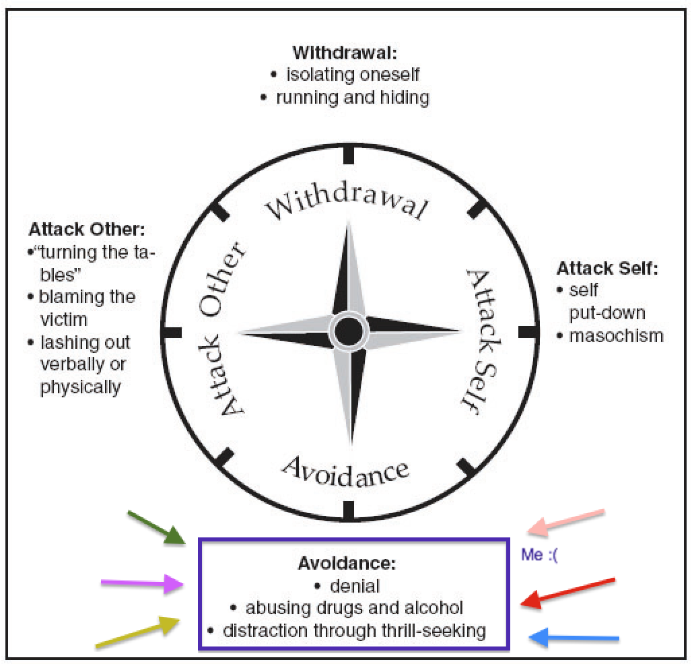

As someone who always tries to avoid confrontation at all costs, my gut reaction to all tense situations is, "How can I resolve, but also make the swiftest exit out of this mess?" While I think my reaction to avoid conflict seems like the best course of action, admittedly there have been times where it has actually backfired.
Side tangent: If there's one thing that peeves me with people I care about at home, at work, in class,or anywhere, it is when they say they are doing fine when we both know that something's up. I want to know how to help, even if it means getting the heck out of there so they could be alone. To me, what's important is that they recognize when there is conflict so that they can deal with it properly. No need to sweep it under the rug and let it potentially build up inside.

I am a hypocrite, because I often fail to realize that I do the same exact thing. When there is an issue that could potentially lead to more conflict before getting resolved, I'd rather try to smooth it over by diverting attention to something that's easier to digest. It is my misinterpreted way of "nipping it in the bud." What I don't realize at times is that hiding my feelings or avoiding an inevitable "confrontation" to resolve conflict is just a temporary buffer that could just make matters worse. To that effect, I think I am on the South end of the pole: Avoidance.

A recent example happens to be with having to tell my workplace that I was quitting for DBC. At around the time I was accepted into DBC, I found a comfortable groove in my workplace and with the people I worked with. So while I knew for sure I wanted to pursue the web developer thing, it became increasingly difficult to approach my job about my decision to leave. I didn't know how to tell them, and made up every excuse in my mind as to why the timing might be bad. All I knew was that the easiest way to deal with it was to avoid the inevitable for as long as I possibly could.
Bad idea. No employer wants the minimum notice of you quitting, especially if you're on good terms with everyone there! After some sobering talks with a few people, plus a lot of mental back-and-forth, I decided to tell my boss sooner than later. He was super supportive and thanked me for staying up front and giving him a heads up way in advance. It was a sweet moment, and a larger crisis was definitely averted.
In hindsight, I'm pretty sure I avoided a bigger conflict. Had I told them last-minute, I'm sure it would have caused a huge headache on all fronts - from finding someone to replace my role, to figuring out what to do with my workload, to even just being a courteous, decent human being to my boss and coworkers.
Going forward, it would be best to put more effort into dealing with conflicts aggressively. Putting up a facade of distractions will not necessarily make things better, especially if you are just putting off the inevitable. Sometimes, it takes stepping out of your comfort zone to confront a conflict to resolve it.